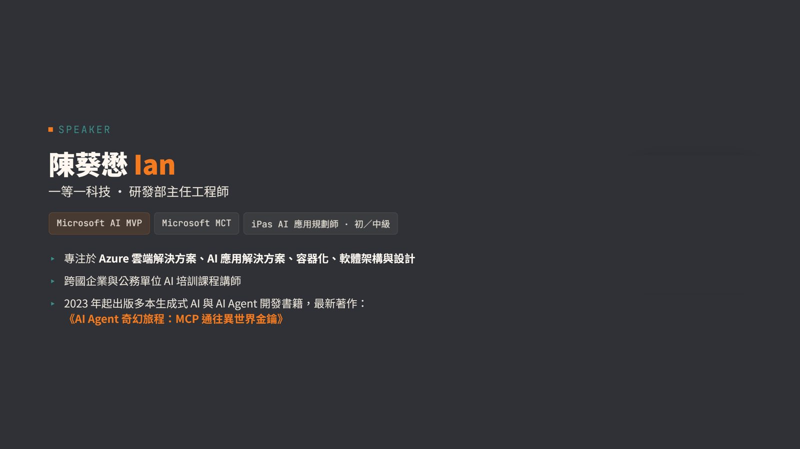
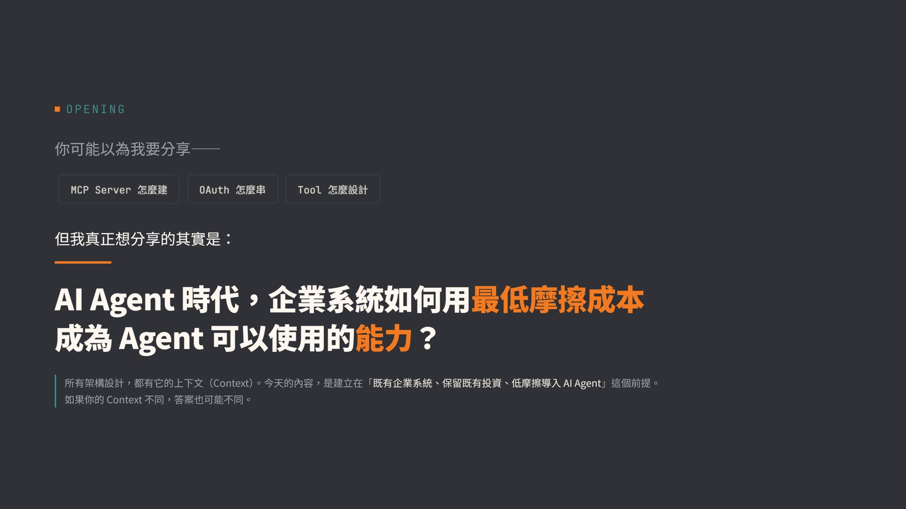
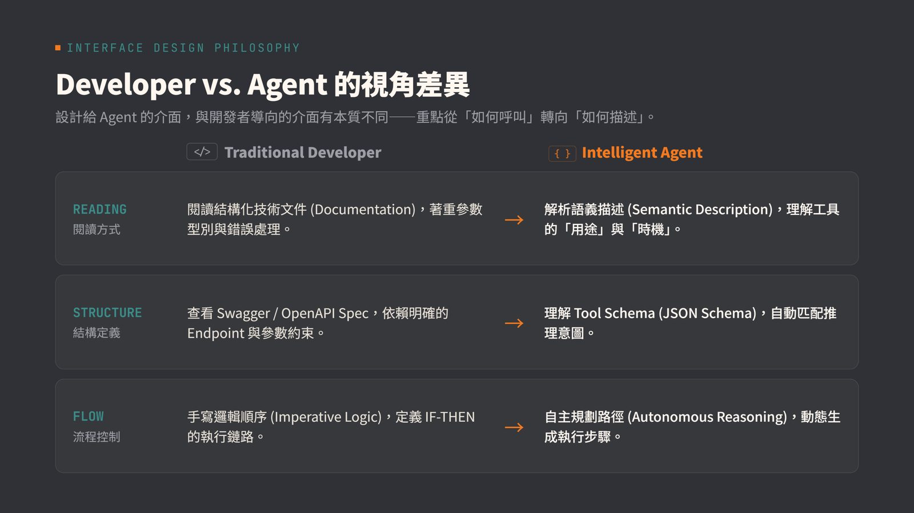
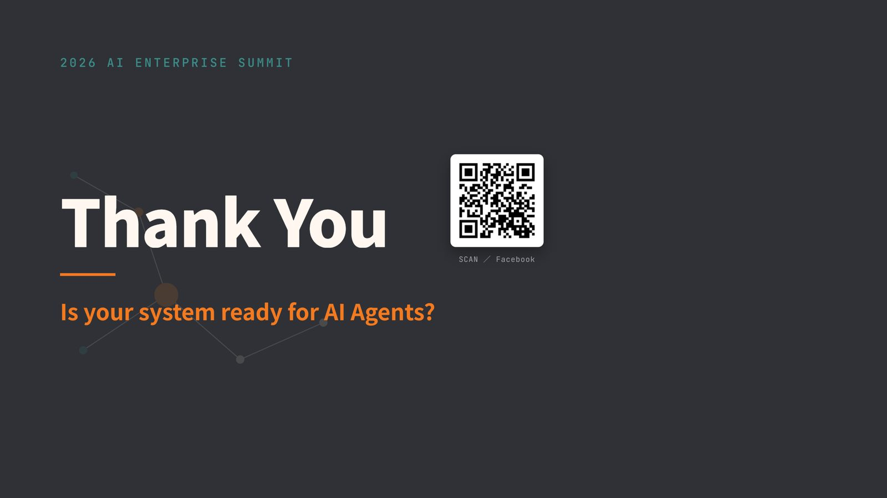
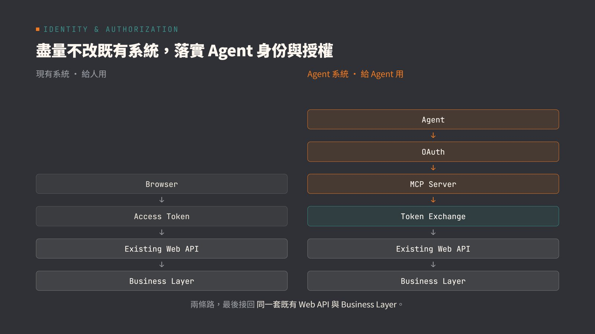

摘要
本講題針對企業導入 Agentic AI 時，既有 API 資產難以被 AI 理解、且串接與重寫成本高昂的痛點，提出一套「低摩擦」的企業級 AI 編排整合路線。講者建議企業無需改造既有核心系統，而是透過 Model Context Protocol (MCP) Server 將現有 API 封裝為標準化的「工具（Tools）」，使 Claude 等 AI Agent 能直接探索並呼叫。在資安治理方面，此架獲整合了以 OAuth 為基礎的「委派授權（Delegated Authorization）」與 Token 交換機制，讓 Agent 僅持有受限範圍（Scope）的短期憑證來代表使用者安全呼叫 API，避免憑證洩漏與越權操作。這套實踐方案協助企業在保障資安合規、可稽核的前提下，將現有 IT 資產無縫融入 AI 自動化工作流中。
重點整理
- 核心主張是「低摩擦」整合：企業不需要重寫既有系統，只要將現有API包裝成MCP Server工具，即可快速納入AI Agent可調用的工具生態。
- 透過OAuth為基礎的委派授權（Delegated Authorization）機制，讓Agent能代表使用者身分安全地呼叫企業內部API，而非直接持有使用者的長期憑證。
- 強調治理面向：以授權範圍（scope）與權限控管機制，確保Agent的行為被限制在企業可控、可預期的範圍內，並可被稽核追蹤。
- 目標是讓企業能將既有API資產快速且安全地整合進AI Orchestration流程，加速企業導入Agentic AI的速度。
重點圖片／架構圖





背景與挑戰：企業API如何被AI使用
企業內部通常已累積大量既有API資產，但這些API多半是為傳統應用程式或系統整合而設計，缺乏讓AI Agent能直接理解與調用的介面，若要重新設計或改寫，成本與風險都相當高。講者提出以「工具化」的方式，將既有API包裝為AI Agent可直接調用的工具，作為低摩擦整合企業系統與AI Orchestration的路線。
MCP Server：工具化既有API
演講核心是透過 MCP（Model Context Protocol）Server 將既有企業API封裝為標準化的工具介面，讓Claude Code、Claude Desktop等AI Agent或Orchestrator可以直接透過MCP協定呼叫這些工具，取代過去需要各自客製API串接方式的作法，藉此加速企業將現有系統能力開放給AI使用。
OAuth 授權治理：讓Agent安全代理使用者
為了讓Agent能安全地代表使用者呼叫企業內部API，演講說明以OAuth為基礎的委派授權機制與token交換架構，確保Agent在執行任務時使用的是經過授權範圍(scope)限制的憑證，而非使用者的完整長期憑證，藉此降低憑證外洩與越權操作的風險，同時讓企業能對Agent的行為進行治理與稽核。